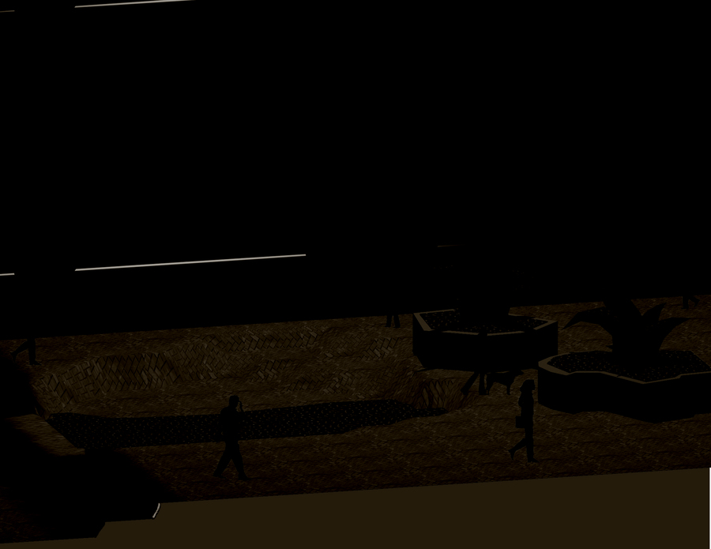
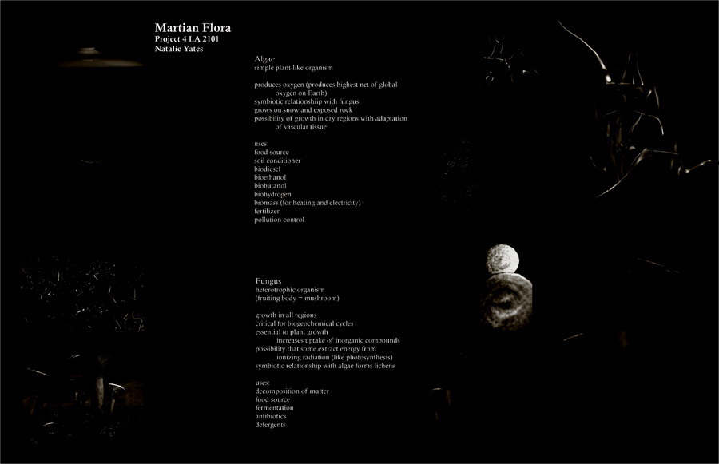
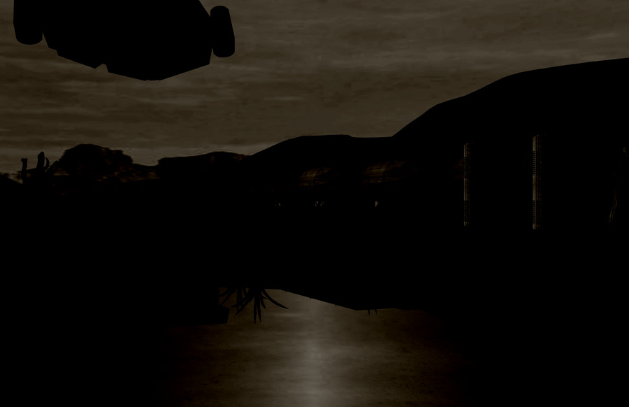

Representation · Narrative
This course presents contemporary methods of digital representation for landscape architects — an intensive exploration of the methodologies, techniques, and theories at work in the contemporary landscape architecture office. It draws on computer graphics techniques from adjacent visual arts industries to expand the repertoire of skills, working from 3D animation and compositing software to create images and animations. Studio work moves from the measured documentation of site into digital models and illustrations, building toward animated representations and a complete presentation package that combines animation, still imagery, and interactive elements.“…an intense focus on the art of storytelling within representation.”



About the course
Advanced Digital Representation (LA 2101) is a representation course in the Robert Reich School of Landscape Architecture at Louisiana State University, taught by Bradley Cantrell across multiple years from Fall 2006 through Fall 2011. The course introduced students to contemporary methods of digital representation — 3D modeling, materials, lighting, animation, and compositing — with an intense focus on the art of storytelling within representation.
Faculty: Bradley Cantrell. Teaching Assistants: Joaquin Martinez and Andrew Collins (Fall 2009). Meeting: Monday, Wednesday, Friday 11:30–13:30, College of Art and Design Room 301.
This page documents the Fall 2009 iteration of the course, whose syllabus and project briefs survive in the archive.